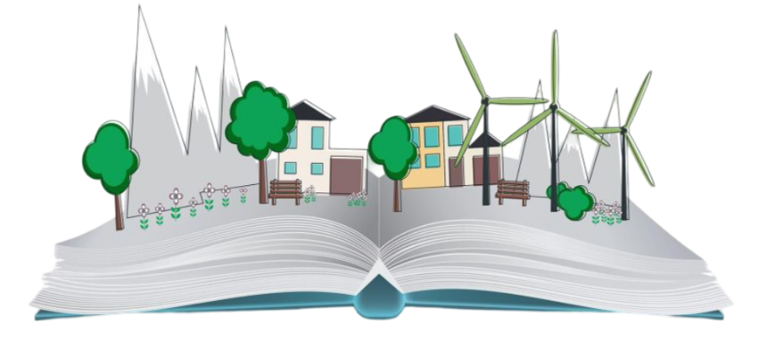
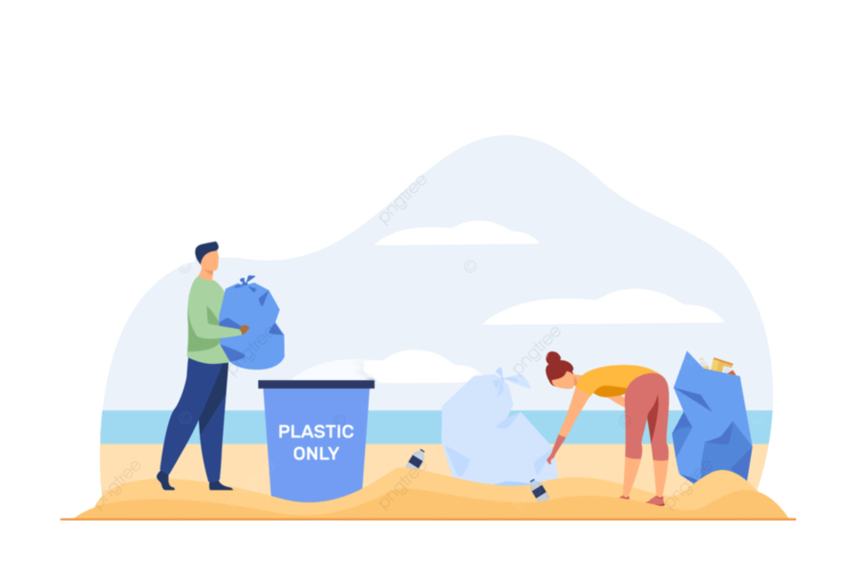
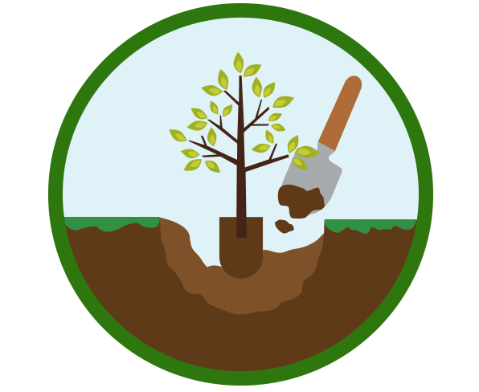
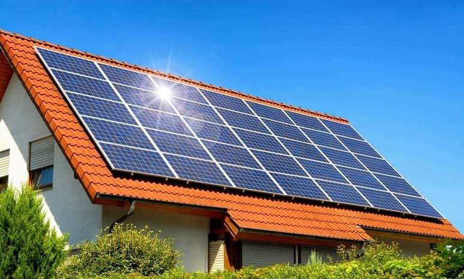
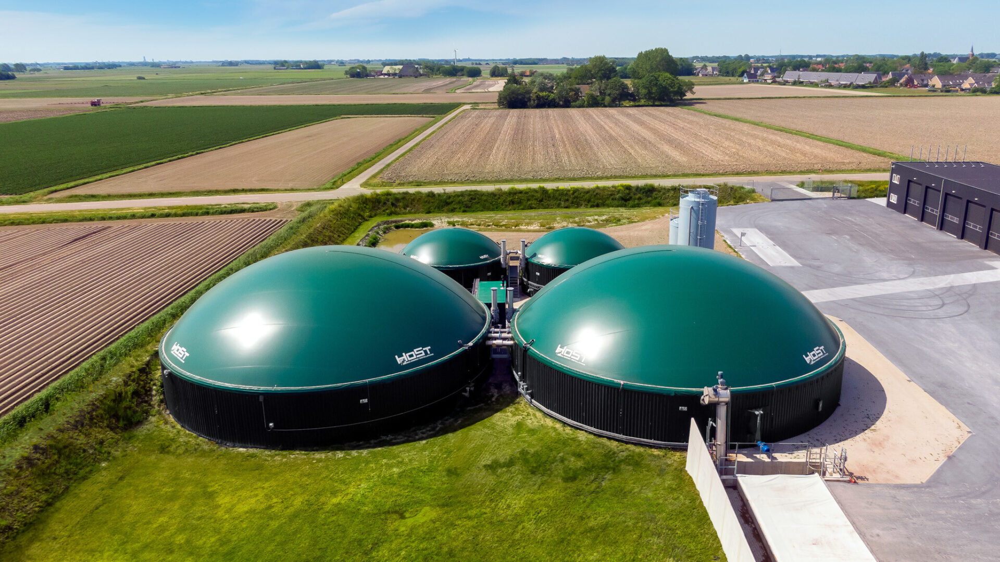
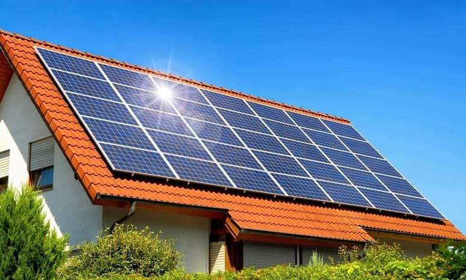
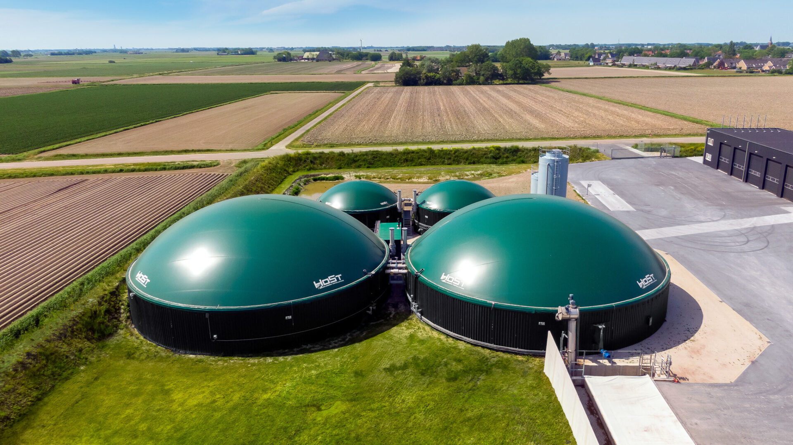

Acerca de Nosotros
Denominación Legal
Fundación SFDL Hacia un Mañana Sostenible
Nuestra Misión
Para garantizar un futuro sostenible para las generaciones presentes y futuras,
se debe promover la conservación y protección del medio ambiente a través de la educación,
la investigación y la acción directa.
Visión
Ser una sociedad en la que la humanidad y la naturaleza convivan en armonía,
en la que los recursos naturales se manejen de manera sostenible y en la que las
generaciones venideras hereden un mundo saludable y resistente.
Actividades que Realizamos con la Comunidad
-
Educación Ambiental
Enseñar a las personas sobre la importancia de la conservación

del medio ambiente a través de talleres,
charlas y programas educativos. Esto fomenta la acción individual
y colectiva y aumenta la conciencia sobre los problemas ambientales.
-
Limpieza de Playa
Recolectar basura y desechos en las playas. Esto promueve la conciencia

sobre la contaminación,
mejora la calidad del agua y protege la vida marina.
-
Reforestación
Plantación de árboles en áreas que han sido deforestadas o degradadas.

Esto ayuda a restaurar el ecosistema, combatir el cambio climático, mejorar
la calidad del aire y del agua.
Próximos Eventos
| Evento | Lugar | Fecha | Hora | Descripción | Objetivo |
|---|---|---|---|---|---|
| Conferencia sobre cambio climático | Universidad de Chile, Santiago, Chile | 10 de abril de 2024 | 10:00 pm a 12:00 pm | Conferencia a cargo de un experto en cambio climático sobre las causas, consecuencias y posibles soluciones al problema del cambio climático. |
Informar y concienciar a la población sobre la importancia de abordar el cambio climático. |
| Taller de Compostaje | Centro Cultural, Santiago, Chile | 10 de abril de 2024 | 14:00 pm a 17:00 pm | Curso teórico-práctico de compostaje en casa. Se hablará de los beneficios del compostaje, de cómo se compostan varios tipos de materiales orgánicos y de cómo se puede usar el compost en el jardín. |
Fomentar el compostaje como una forma de reducir los desechos y proteger el medio ambiente. |
| Jornada de limpieza de playas | Playa Las Torpederas, Valparaíso, Chile | 15 de abril de 2024 | 10:00 pm a 16:00 pm | Se convoca a voluntarios para limpiar la playa Las Torpederas. Se proporcionarán guantes y bolsas de basura. |
Retirar la basura y los residuos de la playa para proteger el medio ambiente marino. |
Temas de Interés

 


